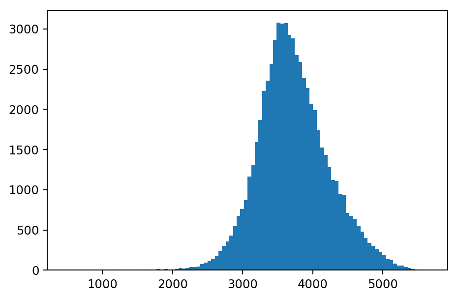
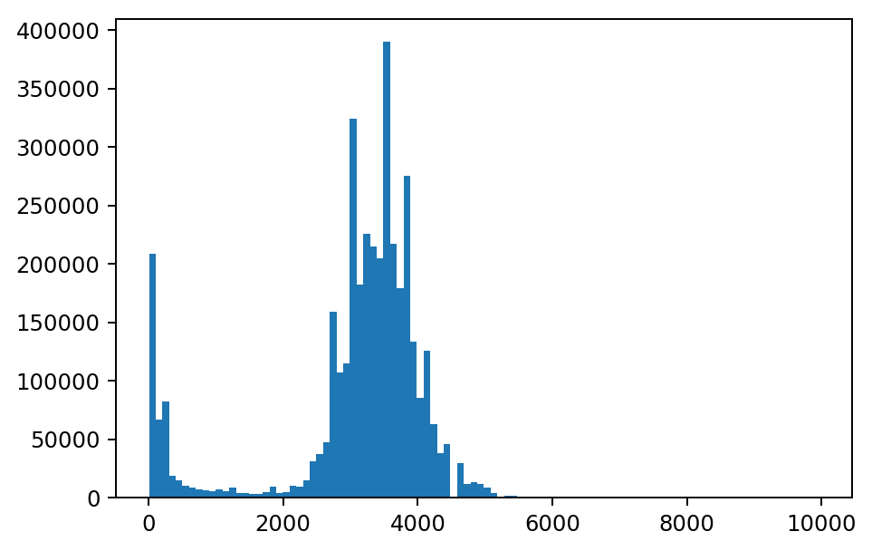

Aggregation
There are three types of aggregate functions available in RasterFrames: tile aggregate, DataFrame aggregate, and element-wise local aggregate. In the tile aggregate functions, we are computing a statistical summary per row of a tile column in a DataFrame. In the DataFrame aggregate functions, we are computing statistical summaries over all of the cell values and across all of the rows in the DataFrame or group. In the element-wise local aggregate functions, we are computing the element-wise statistical summary across a DataFrame or group of tiles. In the latter two cases, when vector data is the grouping column, the results are zonal statistics.
Tile Mean Example
We can illustrate aggregate differences by computing an aggregate mean. First, we create a sample DataFrame of 2 tiles. The tiles will contain normally distributed cell values with the first row’s mean at 1.0 and the second row’s mean at 3.0. For details on use of the Tile class see the page on numpy interoperability.
from pyrasterframes.rf_types import Tile, CellType
t1 = Tile(1 + 0.1 * np.random.randn(5,5), CellType('float64raw'))
t1.cells # display the array in the Tile
array([[0.928, 1.166, 1.051, 1.036, 0.976],
[0.961, 1.054, 0.927, 1.136, 0.949],
[0.934, 0.993, 1.021, 1.043, 1.033],
[1.177, 0.825, 0.982, 0.995, 0.896],
[1.049, 0.996, 0.924, 1.029, 0.928]])
t5 = Tile(5 + 0.1 * np.random.randn(5,5), CellType('float64raw'))
t5.cells
array([[5.04 , 4.854, 4.884, 5.012, 5.138],
[4.905, 5.041, 5.139, 4.778, 5.112],
[4.954, 5.139, 4.936, 4.868, 5.096],
[5.129, 4.98 , 5.015, 5.036, 4.933],
[4.995, 4.837, 5.167, 4.968, 5.183]])
Create a Spark DataFrame from the Tile objects.
import pyspark.sql.functions as F
from pyspark.sql import Row
rf = spark.createDataFrame([
Row(id=1, tile=t1),
Row(id=2, tile=t5)
]).orderBy('id')
We use the rf_tile_mean function to compute the tile aggregate mean of cells in each row of column tile. The mean of each tile is computed separately, so the first mean is about 1.0 and the second mean is about 3.0. Notice that the number of rows in the DataFrame is the same before and after the aggregation.
rf.select(F.col('id'), rf_tile_mean(F.col('tile')))
| id | rf_tile_mean(tile) |
|---|---|
| 1 | 1.0003680179030752 |
| 2 | 5.005668170985756 |
We use the rf_agg_mean function to compute the DataFrame aggregate, which averages values across the fifty cells in two rows. Note that only a single row is returned since the average is computed over the full DataFrame.
rf.agg(rf_agg_mean(F.col('tile')))
| rf_agg_mean(tile) |
|---|
| 3.003018094444416 |
We use the rf_agg_local_mean function to compute the element-wise local aggregate mean across the two rows. For this aggregation, we are computing the mean of one value of 1.0 and one value of 3.0 to arrive at the element-wise mean, but doing so twenty-five times, one for each position in the tile.
To compute an element-wise local aggregate, tiles need to have the same dimensions. In this case, both tiles have 5 rows and 5 columns. If we tried to compute an element-wise local aggregate over the DataFrame without equal tile dimensions, we would get a runtime error.
rf.agg(rf_agg_local_mean('tile')) \
.first()[0].cells.data # display the contents of the Tile array
array([[2.984, 3.01 , 2.968, 3.024, 3.057],
[2.933, 3.047, 3.033, 2.957, 3.031],
[2.944, 3.066, 2.979, 2.956, 3.065],
[3.153, 2.903, 2.999, 3.016, 2.915],
[3.022, 2.917, 3.045, 2.998, 3.056]])
Cell Counts Example
We can also count the total number of data and NoData cells over all the tiles in a DataFrame using rf_agg_data_cells and rf_agg_no_data_cells. There are ~3.8 million data cells and ~1.9 million NoData cells in this DataFrame. See the section on “NoData” handling for additional discussion on handling missing data.
rf = spark.read.raster('https://s22s-test-geotiffs.s3.amazonaws.com/MCD43A4.006/11/05/2018233/MCD43A4.A2018233.h11v05.006.2018242035530_B02.TIF')
stats = rf.agg(rf_agg_data_cells('proj_raster'), rf_agg_no_data_cells('proj_raster'))
stats
| rf_agg_data_cells(proj_raster) | rf_agg_no_data_cells(proj_raster) |
|---|---|
| 3825959 | 1934041 |
Statistical Summaries
The statistical summary functions return a summary of cell values: number of data cells, number of NoData cells, minimum, maximum, mean, and variance, which can be computed as a tile aggregate, a DataFrame aggregate, or an element-wise local aggregate.
The rf_tile_stats function computes summary statistics separately for each row in a tile column as shown below.
rf = spark.read.raster('https://s22s-test-geotiffs.s3.amazonaws.com/luray_snp/B02.tif')
stats = rf.select(rf_tile_stats('proj_raster').alias('stats'))
stats.printSchema()
root
|-- stats: struct (nullable = true)
| |-- data_cells: long (nullable = false)
| |-- no_data_cells: long (nullable = false)
| |-- min: double (nullable = false)
| |-- max: double (nullable = false)
| |-- mean: double (nullable = false)
| |-- variance: double (nullable = false)
stats.select('stats.min', 'stats.max', 'stats.mean', 'stats.variance')
Showing only top 5 rows.
| min | max | mean | variance |
|---|---|---|---|
| 199.0 | 5331.0 | 455.5312957763667 | 68728.44405841625 |
| 187.0 | 1911.0 | 310.51860046386815 | 13849.46165963797 |
| 181.0 | 1530.0 | 259.9732513427734 | 3501.4270036255507 |
| 170.0 | 2535.0 | 292.7441253662109 | 11137.773410618069 |
| 152.0 | 3641.0 | 290.0180511474609 | 14295.314752891418 |
The rf_agg_stats function aggregates over all of the tiles in a DataFrame and returns a statistical summary of all cell values as shown below.
stats = rf.agg(rf_agg_stats('proj_raster').alias('stats')) \
.select('stats.min', 'stats.max', 'stats.mean', 'stats.variance')
stats
| min | max | mean | variance |
|---|---|---|---|
| 3.0 | 12103.0 | 542.1327946489893 | 685615.201702677 |
The rf_agg_local_stats function computes the element-wise local aggregate statistical summary as shown below. The DataFrame used in the previous two code blocks has unequal tile dimensions, so a different DataFrame is used in this code block to avoid a runtime error.
rf = spark.createDataFrame([
Row(id=1, tile=t1),
Row(id=3, tile=t1 * 3),
Row(id=5, tile=t1 * 5)
]).agg(rf_agg_local_stats('tile').alias('stats'))
agg_local_stats = rf.select('stats.min', 'stats.max', 'stats.mean', 'stats.variance').collect()
for r in agg_local_stats:
for stat in r.asDict():
print(stat, ':\n', r[stat], '\n')
min :
Tile(dimensions=[5, 5], cell_type=CellType(float64, nan), cells=
[[0.9282088070164454 1.1658666298204128 1.051112558392383
1.0363143402254564 0.9755100718880821]
[0.9612541143829654 1.0542279425291008 0.9272238787873663
1.1356186987950083 0.9493553042150706]
[0.9339750312424553 0.9927672443485028 1.021065368336942
1.0428641191127268 1.0332995756135608]
[1.1767832524939559 0.8245824944650655 0.9820480875542047
0.9954389329828767 0.8960754994646442]
[1.049373190467312 0.9956720358500253 0.9235653575509426
1.028888423153106 0.9281094888882713]])
max :
Tile(dimensions=[5, 5], cell_type=CellType(float64, nan), cells=
[[4.641044035082227 5.829333149102064 5.255562791961915 5.181571701127282
4.877550359440411]
[4.806270571914827 5.271139712645504 4.6361193939368315
5.678093493975042 4.746776521075353]
[4.669875156212276 4.963836221742514 5.105326841684709 5.214320595563634
5.166497878067804]
[5.883916262469779 4.122912472325328 4.910240437771024 4.977194664914383
4.480377497323221]
[5.24686595233656 4.978360179250126 4.617826787754713 5.144442115765529
4.640547444441356]])
mean :
Tile(dimensions=[5, 5], cell_type=CellType(float64, nan), cells=
[[2.7846264210493366 3.497599889461238 3.153337675177149
3.1089430206763695 2.9265302156642465]
[2.8837623431488963 3.1626838275873026 2.781671636362099
3.406856096385025 2.8480659126452124]
[2.801925093727366 2.9783017330455084 3.063196105010826 3.12859235733818
3.099898726840683]
[3.530349757481867 2.4737474833951967 2.946144262662614 2.98631679894863
2.6882264983939326]
[3.1481195714019363 2.987016107550076 2.7706960726528274
3.0866652694593175 2.784328466664814]])
variance :
Tile(dimensions=[5, 5], cell_type=CellType(float64, nan), cells=
[[2.2975242384610457 3.6246533294101546 2.946233627760483
2.8638597646851256 2.5376530676135776]
[2.4640252597818098 2.9637241461577073 2.2926509903826373
3.4390128774743136 2.403401316376769]
[2.3261582906249183 2.6282314705368517 2.7801986304454775
2.9001748558207066 2.847221367901769]
[3.692850195600677 1.8131634404752788 2.5717825233836553
2.6423964514615665 2.1412034686421633]
[2.9364909143241213 2.6436341412632878 2.2745945857818697
2.822963699462628 2.2970325956385285]])
Histogram
The rf_tile_histogram function computes a count of cell values within each row of tile and outputs a bins array with the schema below. In the graph below, we have plotted each bin’s value on the x-axis and count on the y-axis for the tile in the first row of the DataFrame.
import matplotlib.pyplot as plt
rf = spark.read.raster('https://s22s-test-geotiffs.s3.amazonaws.com/MCD43A4.006/11/05/2018233/MCD43A4.A2018233.h11v05.006.2018242035530_B02.TIF')
hist_df = rf.select(rf_tile_histogram('proj_raster')['bins'].alias('bins'))
hist_df.printSchema()
bins_row = hist_df.first()
values = [int(bin['value']) for bin in bins_row.bins]
counts = [int(bin['count']) for bin in bins_row.bins]
plt.hist(values, weights=counts, bins=100)
plt.show()
root
|-- bins: array (nullable = true)
| |-- element: struct (containsNull = true)
| | |-- value: double (nullable = false)
| | |-- count: long (nullable = false)

The rf_agg_approx_histogram function computes a count of cell values across all of the rows of tile in a DataFrame or group. In the example below, the range of the y-axis is significantly wider than the range of the y-axis on the previous histogram since this histogram was computed for all cell values in the DataFrame.
bins_list = rf.agg(
rf_agg_approx_histogram('proj_raster')['bins'].alias('bins')
).collect()
values = [int(row['value']) for row in bins_list[0].bins]
counts = [int(row['count']) for row in bins_list[0].bins]
plt.hist(values, weights=counts, bins=100)
plt.show()
